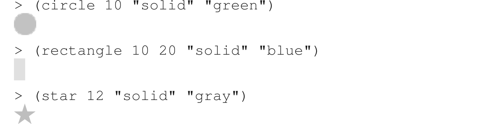
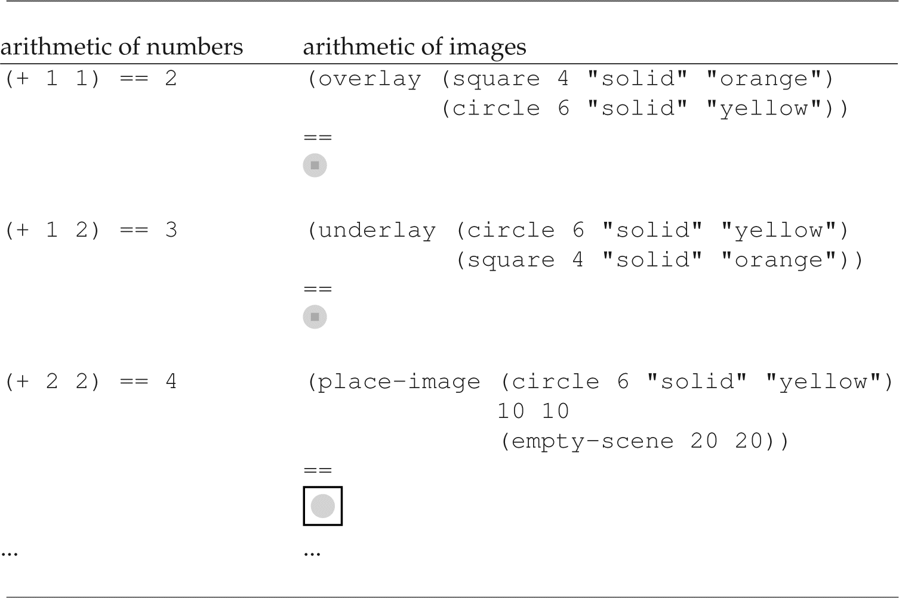
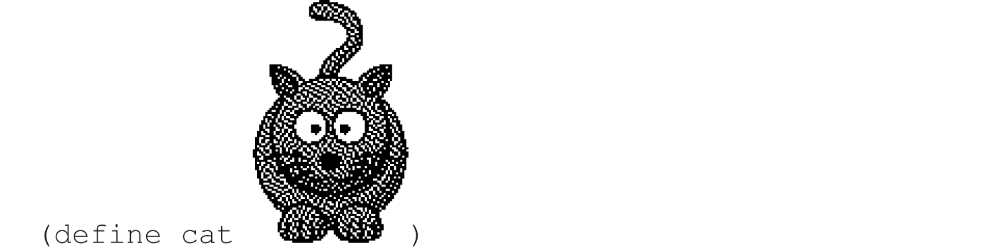

1.4 The Arithmetic of Images
An Image is a visual, rectangular piece of data, for example, a photo or a geometric figure and its frame. You can insert images in DrRacket wherever you can write down an expression because images are values, just like numbers and strings.
Remember to require the 2htdp/image library in a new tab.
Your programs can also manipulate images with primitive operations. These primitive operations come in three flavors. The first kind concerns the creation of basic images:
• circle produces a circle image from a radius, a mode string, and a color string;
• ellipse produces an ellipse from two radii, a mode string, and a color string;
• line produces a line from two points and a color string;
• rectangle produces a rectangle from a width, a height, a mode string, and a color string;
• text produces a text image from a string, a font size, and a color string; and
• triangle produces an upward-pointing equilateral triangle from a size, a mode string, and a color string.
The names of these operations mostly explain what kind of image they create. All you must know is that mode strings means "solid" or "outline", and color strings are strings such as "orange", "black", and so on.
Play with these operations in the interactions window:

Stop! The above uses a previously unmentioned operation. Look up its documentation and find out how many more such operations the 2htdp/image library comes with. Experiment with the operations you find.
The second kind of functions on images concern image properties:
• image-width determines the width of an image in terms of pixels;
• image-height determines the height of an image;
They extract the kind of values from images that you expect:
> (image-width (circle 10 "solid" "red"))
20
> (image-height (rectangle 10 20 "solid" "blue"))
20
Stop! Explain how DrRacket determines the value of this expression:
(+ (image-width (circle 10 "solid" "red"))
(image-height (rectangle 10 20 "solid" "blue")))
A proper understanding of the third kind of image-composing primitives requires the introduction of one new idea: the anchor point. An image isn’t just a single pixel, it consists of many pixels. Specifically, each image is like a photograph, that is, a rectangle of pixels. One of these pixels is an implicit anchor point. When you use an image primitive to compose two images, the composition happens with respect to the anchor points, unless you specify some other point explicitly:
• overlay places all the images to which it is applied on top of each other, using the center as anchor point;
• overlay/xy is like overlay but accepts two numbers—x and y—between two image arguments. It shifts the second image by x pixels to the right and y pixels down—all with respect to the first image’s top-left corner; unsurprisingly, a negative x shifts the image to the left and a negative y up; and
• overlay/align is like overlay but accepts two strings that shift the anchor point(s) to other parts of the rectangles. There are nine different positions overall; experiment with all possibilities!
The 2htdp/image library comes with many other primitive functions for combining images. As you get familiar with image processing, you will want to read up on those. For now, we introduce three more because they are important for creating animated scenes and images for games:
• empty-scene creates a rectangle of some given width and height;
• place-image places an image into a scene at a specified position. If the image doesn’t fit into the given scene, it is appropriately cropped;
• scene+line consumes a scene, four numbers, and a color to draw a line into the given image. Experiment with it to see how it works.
The laws of arithmetic for images are analogous to those for numbers; see figure 10 for some examples and a comparison with numeric arithmetic. Again, no image gets destroyed or changed. Like +, these primitives just make up new images that combine the given ones in some manner.

Figure 10: Laws of image creation
Exercise 5. Use the 2htdp/image library to create the image of a simple boat or tree. Make sure you can easily change the scale of the entire image. 
Copy and paste the image into your DrRacket.
Exercise 6. Add the following line to the definitions area:

Create an expression that counts the number of pixels in the image.